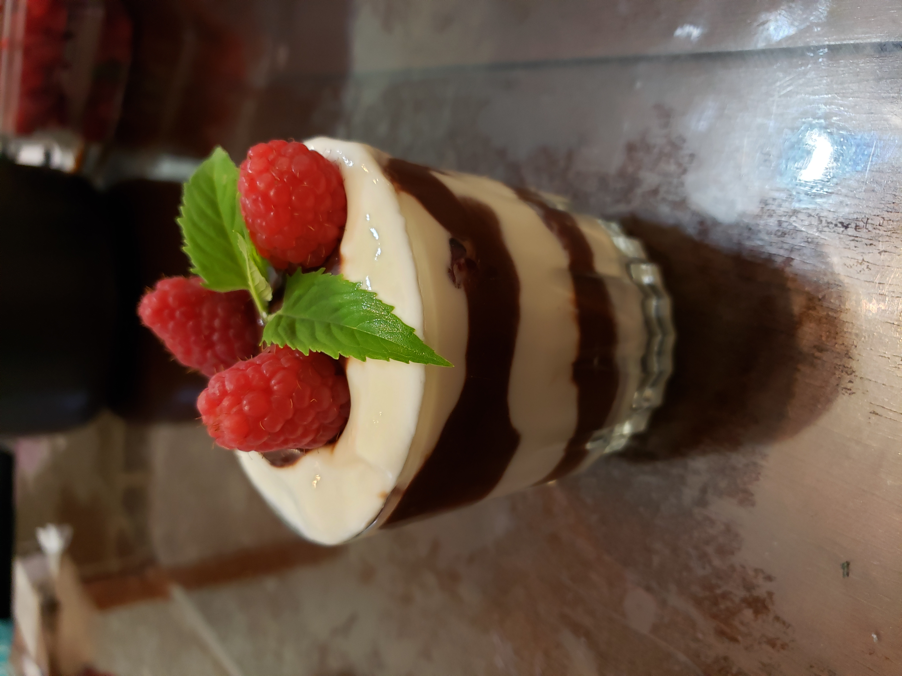

Raspberry Parfait with Dark Chocolate Bergamot Sauce

Ingredients:
Dark Chocolate Bergamot Sauce:
- 1 cup Half and half
- 1/4 cup Fresh bee balm leaves, finely chopped
- 12 oz Dark chocolate chips
Other Ingredients:
- 2 cups Raspberries
- 32 oz Vanilla yogurt
Instructions:
- In a small sauce pan, heat the half and half until just below boiling. Remove from the heat and mix in the chopped bee balm. Let steep for at least 30 minutes.
- In a large heat-proof bowl, place the chocolate chips. Pour the cream through a sieve and into a the bowl over the chocolate. Fill the sauce pan with a few inches of water and bring it to a simmer. Stack the bowl of chocolate and cream over the sauce pan and heat until the chocolate is melted. Stir until smooth.
- Assemble parfaits with a layer of yogurt first, followed by a layer of chocolate sauce and then berries. Continue the layers until the glasses are full. Top with a few berries and optionally garnish with a small sprig of bee balm.